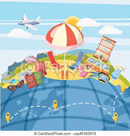

¿Cuántas capacitaciones existen?
Bachilleres cuanta con 5 capacitaciones principales:
- Tecnología de la Información y Comunicación
- Administración,
- Turismo
- Contabilidad
- Comunicación
Tecnologia de la Información y Comunicación
Tambien llamada TIC'S Son una colección de recursos, herramientas, dispositivos, programas informáticos, aplicaciones, redes y medios; que permite la recopilación, el procesamiento, el almacenamiento y la transmisión de información como: voz, datos, texto, video e imágenes
Administración

Su enfoque es el hacer que jovenes sepan como manejar un negocio o como se administra uno, llevando materias tan importantes como Contabilidad, Matemáticas financieras, entre otras que le seran de mucha ayuda en el futuro en casi de que estos quieran manejar una empresa.
Comunicación

Esta capacitación se podria considerar sencialla, pero no lo es, en esta se ocupa mucho el lenguaje y la forma e expresarse, en esta se ve como hablar y escribir gramaticalmente correcto, asi como la capacidad de uno o más individuos para la comunicación efectiva, esto es muy solicitado en el ámbito laboral, ya que sin la efectiva comunicación pueden llegar a ocurrir errores catastróficos.
Turismo
Esta capacitación es de las más solicitadas, ya que este Bachiller se encuentra en la zona de Cancún que es un lugar de destinos turisticos, y los jóvenes tratan de prepararse para seguir en el ámbito turistico ya graduados de Bachilleres, en esta materia tienen algunas materias especiales, que se relacionan a los hoteles, y el servicio, como lo son acomodar en el servicio de restaurantes y en habitaciónes de hoteles.
Contabilidad
Esta capacitación no es muy solicitada o popular pero es igual de importante como cualquier otra, ya que esta es una de las pocas capacitaciones/materias que serviran en el dia a dia de las personas, ya que en esta se te enseña como calcular distintas cosas y usar distintos equipos de contador, y aunque no muchos de los egresado e bachilleres no serán contadores, tendran ya la experiencia de como se usa y maneja la contabilidad.